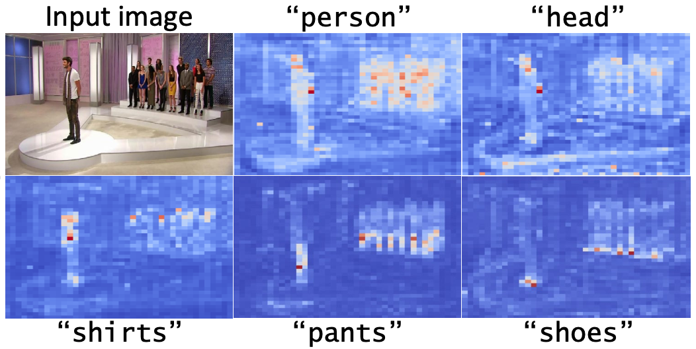
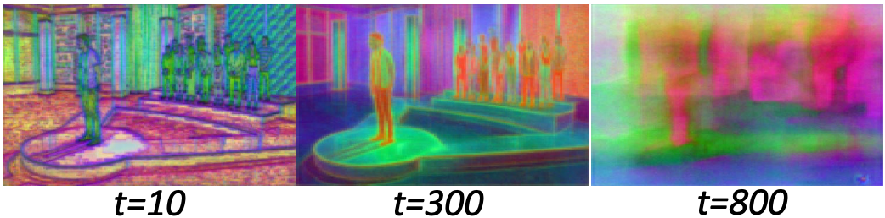
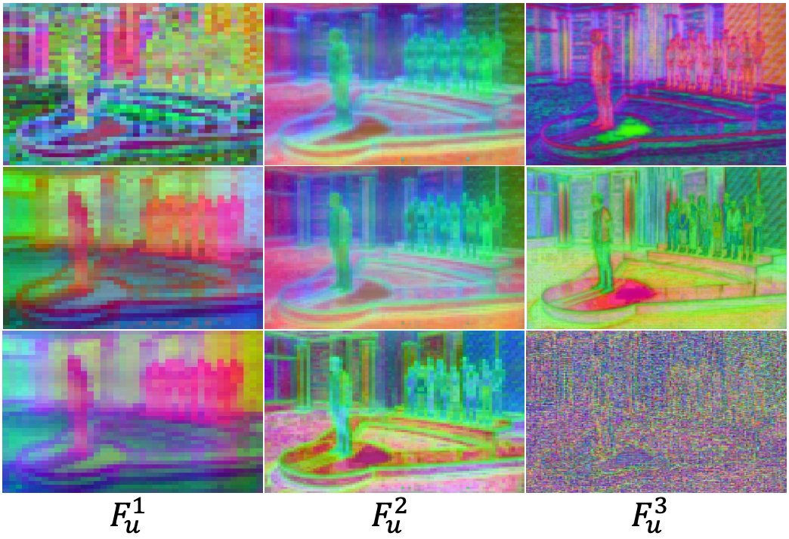
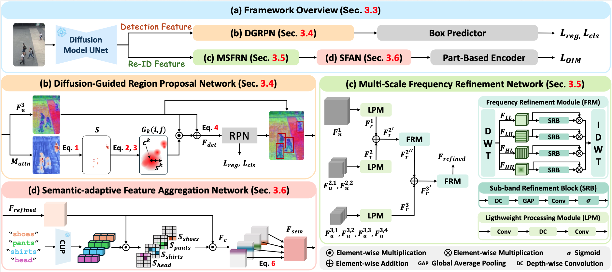
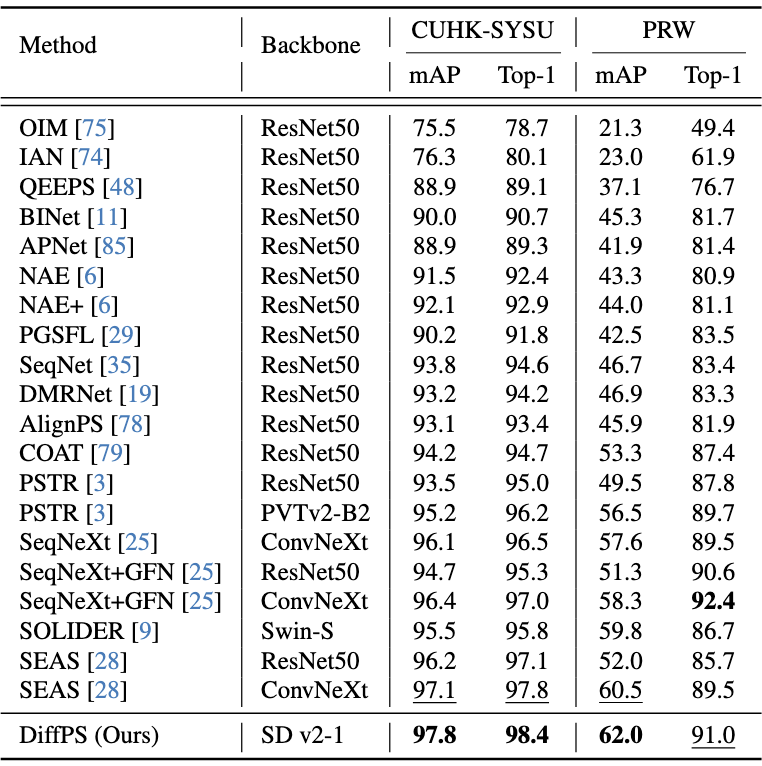

Research Motivation
Most existing person search models rely on ImageNet pre-trained backbones. While these backbones provide decent fine-grained features, they often lack the rich visual priors required for person search in diverse and complex scenes.
Conventional approaches also rely on a shared backbone for both person detection and re-identification, leading to conflicting optimization objectives and degraded performance.
We address these limitations by leveraging a pre-trained diffusion model, which offers richer visual semantics and enables task-specific decoupling to avoid feature interference.
Method
Prior Knowledge in Diffusion Model
DiffPS uses a frozen diffusion backbone (Stable Diffusion) and separates task-specific features for detection and Re-ID to avoid gradient interference. We leverage four inherent priors:
Pre-trained diffusion models exhibit strong text–image alignment, enabling precise localization of person-related regions (e.g., body parts, clothing). This motivates DGRPN and SFAN.

The informativeness of diffusion features varies with timestep. For person search, earlier steps retain fine-grained features while minimizing noise impact.

Up-stage layers in the UNet merge global context and local details. Carefully selecting specific up-stage outputs improves spatial precision and identity discrimination.

Generative models often exhibit shape bias. We design MSFRN to reinforce high-frequency, fine-grained representations.
DiffPS Framework
DiffPS features a frozen diffusion backbone with decoupled detection (DGRPN) and re-ID (MSFRN, SFAN) branches, each tailored to distinct diffusion priors.

Module Design
Dedicated modules for detection and re-ID that fully exploit the diffusion backbone.
📍 DGRPN (Detection)
A region proposal network that harnesses text-conditioned priors to enhance localization and suppress background clutter.
🔍 MSFRN (Re-ID)
Multi-scale frequency refinement with hierarchical DWT to mitigate shape bias and enhance fine-grained discriminative features.
🧠 SFAN (Re-ID)
Semantic-adaptive feature aggregation using cross-modal alignment for text-aware re-ID representations.
Quantitative Results

Curious to dive deeper? Check out our full paper for all the details.
Citation
@inproceedings{kim2025leveraging,
title = {Leveraging Prior Knowledge of Diffusion Model for Person Search},
author = {Kim, Giyeol and Yang, Sooyoung and Oh, Jihyong and Kang, Myungjoo and Eom, Chanho},
booktitle = {Proceedings of the IEEE/CVF International Conference on Computer Vision},
pages = {20301--20312},
year = {2025}
}